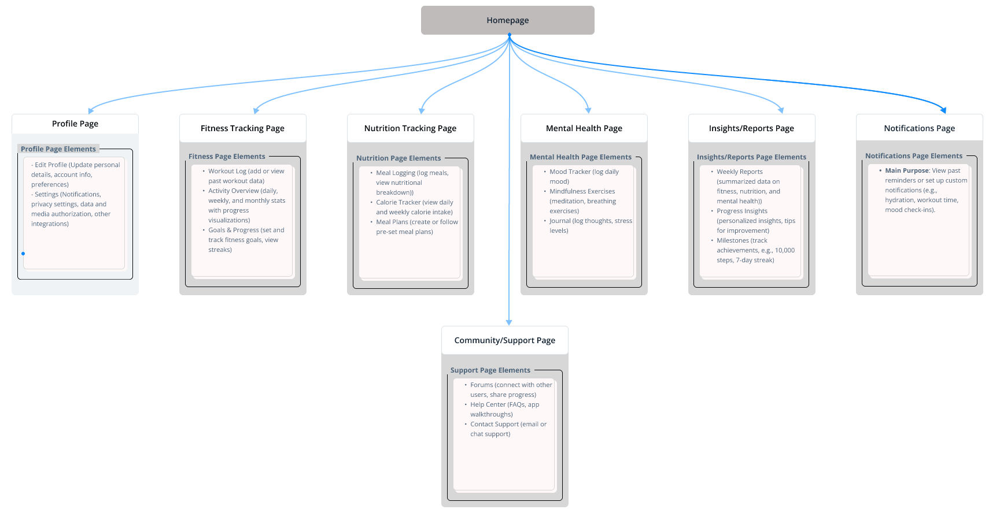
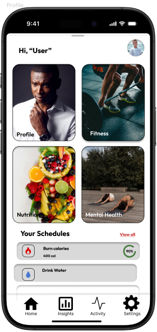
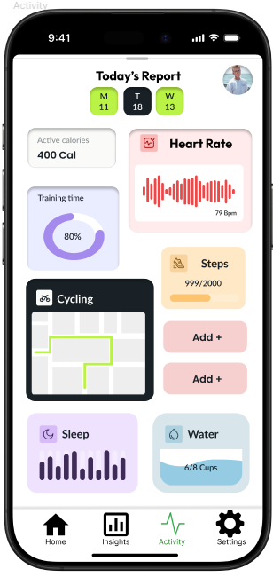

<!DOCTYPE html>
<html lang="en">
  <head>
    <meta charset="UTF-8" />
    <meta name="viewport" content="width=device-width, initial-scale=1.0" />
    <title>Taha Zahid - UX Projects</title>
    <link rel="stylesheet" href="styles.css" />
    <link
      href="https://fonts.googleapis.com/css2?family=Poppins:ital,wght@0,100;0,200;0,300;0,400;0,500;0,600;0,700;0,800;0,900;1,100;1,200;1,300;1,400;1,500;1,600;1,700;1,800;1,900&display=swap"
      rel="stylesheet"
    />

    <link
      rel="stylesheet"
      href="https://cdnjs.cloudflare.com/ajax/libs/font-awesome/6.6.0/css/all.min.css"
      integrity="sha512-Kc323vGBEqzTmouAECnVceyQqyqdsSiqLQISBL29aUW4U/M7pSPA/gEUZQqv1cwx4OnYxTxve5UMg5GT6L4JJg=="
      crossorigin="anonymous"
      referrerpolicy="no-referrer"
    />
    <link rel="preconnect" href="https://fonts.googleapis.com" />
    <link rel="preconnect" href="https://fonts.gstatic.com" crossorigin />
    <link rel="icon" href="images/t.png" type="image/x-icon" />
    <link
      href="https://fonts.googleapis.com/css2?family=Mate:ital@1&display=swap"
      rel="stylesheet"
      <link
      rel="stylesheet"
      href="styles.css"
    />
  </head>
</html>
<body>
  <!-- Navbar -->
  <nav>
    <div class="left">
      <a href="/">Taha Zahid</a>
    </div>
    <div class="right">
      <a href="http://github.com" target="_blank" rel="noopener noreferrer">
        <i class="fa-brands fa-github"></i> <span>Github</span></a
      >

      <a
        href="http://linkedin.com/in/tahazahid"
        target="_blank"
        rel="noopener noreferrer"
      >
        <i class="fa-brands fa-linkedin"></i> <span>Linkedin</span></a
      >

      <a href="mailto:tahazahid24@gmail.com">
        <i class="fa-solid fa-envelope"></i> <span>Email</span></a
      >
    </div>
  </nav>
  
  <!-- UX Project Content -->
  <div class="ux-project">
    <section>
      <h2>UX Projects</h2>
      <p>
       <strong>Here are some UX projects I have been working on to enhance user experience and design:</strong>
      </p>
    </section>

    <section class="project-details">
      <h3>Health and Wellness Tracker</h3>
      <p>
        Improving the user experience of a <strong>Health and Wellness Tracker</strong>
        by enhancing the <strong>Information Architecture (IA)</strong> and optimizing user flow. 
        The goal was to create a more intuitive interface for users to track fitness, nutrition, 
        and mental health goals seamlessly. 
        <br><br>
        This project aimed to tackle common problems in wellness apps, such as cluttered interfaces 
        and complex tracking systems. By reorganizing the IA and redesigning the UI, I ensured 
        simplicity, engagement, and functionality for users.
      </p>

      <!-- Images Section -->
      <div class="images">
        <!-- IA Diagram -->
        <div class="image-container ia-full">
          <h4>Information Architecture</h4>
          
        </div>

        <!-- Mobile UI Screenshot -->
        <div class="images mobile-ui">
          <div class="image-container">
            <h4>Mobile Interface: Profile</h4>
            
          </div>
        
          <div class="image-container">
            <h4>Mobile Interface: Activity</h4>
            
          </div>
        </div>
      </div>
    </section>


<section class="design-rationale">
  <!-- Design Rationale -->
<div class="design-rationale">
  <h3>Design Rationale</h3>

  <div class="page-explanation">
    <h4>Profile Page: Simplified User Navigation</h4>
    <p>
      The Profile Page was designed with <strong> user-friendly navigation</strong> in mind. By breaking features into 
      clear, distinct categories—<strong>Fitness</strong>, <strong>Nutrition</strong>, and <strong>Mental Health</strong>—users can 
      quickly access the tools they need without feeling overwhelmed.
      This approach solves a common problem seen in health apps: <strong>cluttered and chaotic interfaces</strong>. 
      By giving each category its own dedicated space, users can focus on specific health goals 
      without distractions. For example:
    </p>
    <p style="text-align: center; font-weight: bold;">
      🔴 Fitness: Track workouts, set goals, and monitor progress.
      <br>
      🔴 Nutrition: Log meals, view calorie intake, and create meal plans.
      <br>
      🔴 Mental Health: Log moods, journal, and perform mindfulness exercises.
    </p>

    <p>
      Furthermore, fitness tracker apps such as  <strong>MyFitnessPal</strong> allow users to log workouts, meals, and 
      weight goals. However, its interface can appear cluttered due to overlapping elements and make it difficult to navigate to certain sections in the application. By creating a 
      dedicated space for each category in our app, we provide a cleaner, more streamlined navigation 
      experience.
    </p>

  </div>

  <div class="page-explanation">
    <h4>Activity Page: Comprehensive Overview</h4>
    <p>
      Many health apps, like <strong>Step Up</strong>, display isolated metrics such as steps or 
      calories without consolidating the user’s health data into a single view. Our Activity Page 
      solves this problem by offering a comprehensive dashboard that integrates all key metrics: 
    </p>

    <p style="text-align: center; font-weight: bold;">
      🔵 Active calories burned
      <br>
      🔵 Heart rate
       <br>
       🔵 Steps taken and distance covered
        <br> 
      🔵 Sleep and hydration tracking
    </p>
    
    <p>
      By combining these metrics into a single dashboard, users can get a holistic view of their progress 
      without toggling between multiple screens. This is particularly useful for users who prefer to 
      track their progress quickly and make informed decisions.
      For example, a user may notice that they burned fewer calories today, walked fewer steps, 
      or drank less water. The combined view makes it easier to spot trends and take corrective actions 
      to stay on track with their goals.
    </p>
    <p>
      Overall, this design enhances user engagement by promoting <strong>clarity, efficiency, and usability</strong>, 
      solving the common issue of fragmented health tracking seen in many wellness apps.
    </p>
  </div>
</div>

    <section class="outcome">
      <h3>Key Learning Outcomes</h3>
      <ul>
        <li>Streamlined navigation with clear IA.</li>
        <li>Engaging UI with improved user flow for fitness, nutrition, and mental health.</li>
        <li>Enhanced motivation with schedules, reminders, and progress tracking.</li>
        <li>Interactive and easy access design.</li>
      </ul>
    </section>
  </div>
</body>

</html>